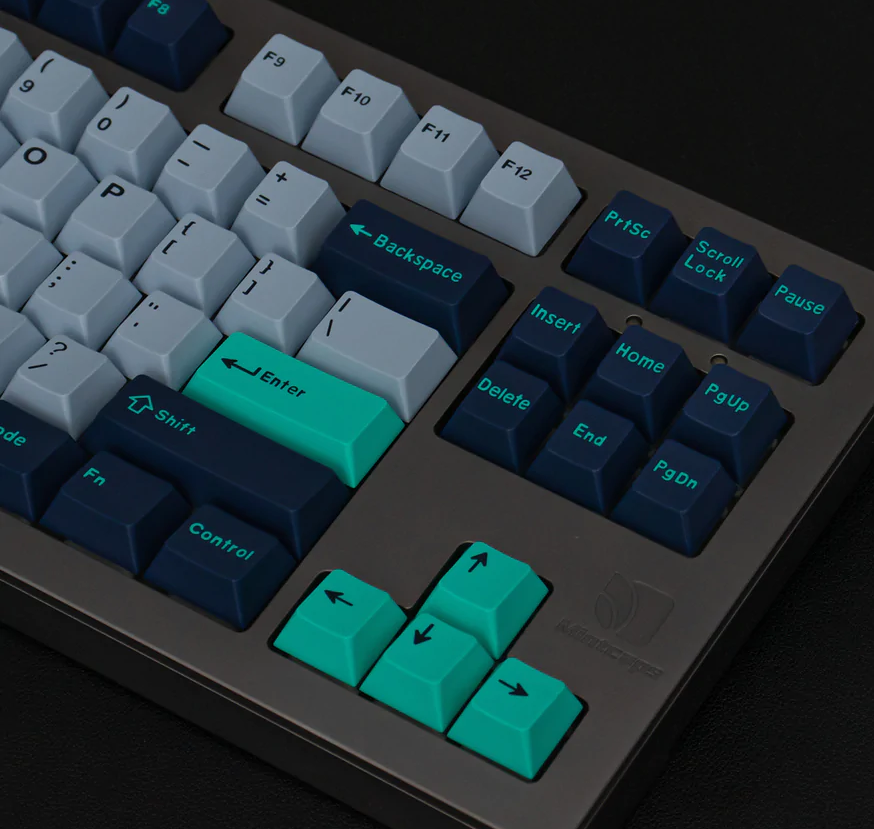

Frequently Asked Questions
Integer sagittis efficitur efficitur. Aliquam enim libero, laoreet sed molestie vitae, elementum quis justo. Etiam justo ipsum, viverra id eleifend id, commodo eget lectus.
Fusce velit diam, efficitur id nisl sed, semper rhoncus justo. Phasellus at leo enim. Curabitur finibus quis tortor a viverra. Donec et purus sem. Phasellus at placerat est. Fusce a condimentum ligula.
Praesent aliquet bibendum urna, egestas volutpat sapien sagittis sit amet. Fusce lobortis dictum risus, eu ullamcorper erat lacinia nec. Vestibulum euismod bibendum orci. Sed nibh magna, vestibulum id ipsum ut, congue sollicitudin nunc. Praesent luctus mauris in neque tristique sagittis.
